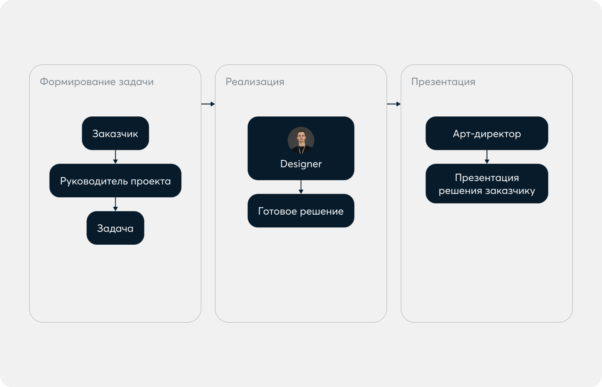
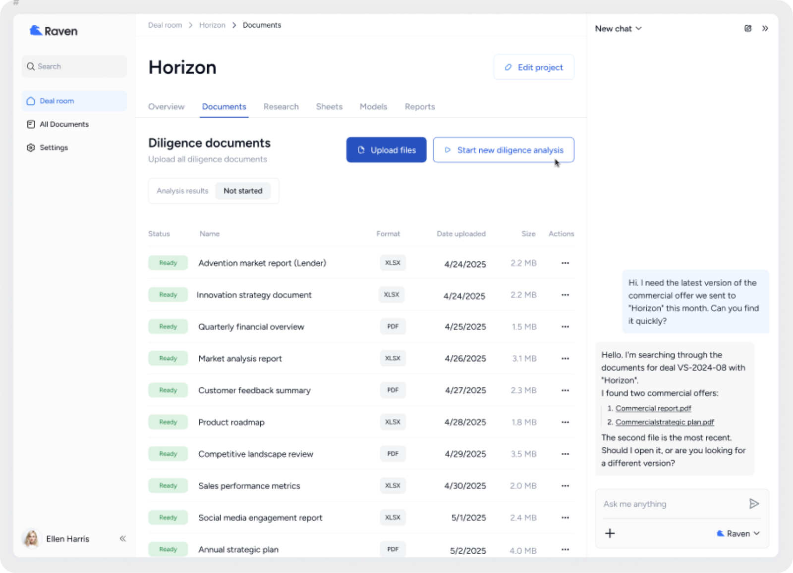
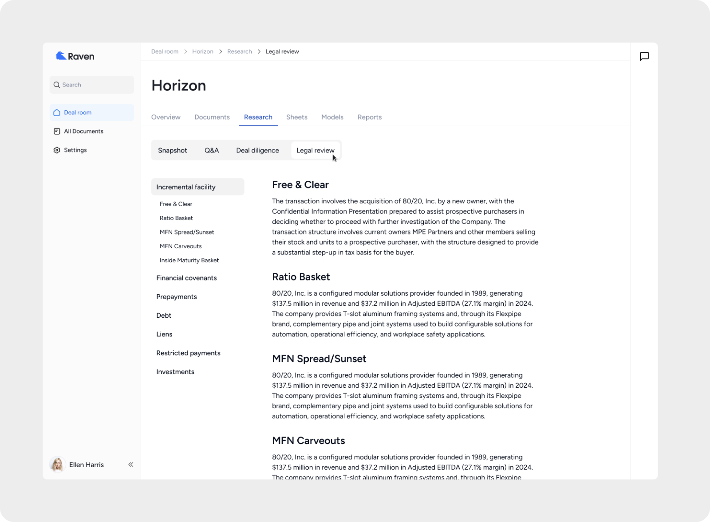

Об агентстве
Uprising Agency — международное агентство, специализирующееся на брендинге, веб-
дизайне, разработке цифровых продуктов и создании решений для стартапов.
Ниша: B2B, B2C, E-commerce
Платформы: Web, Mobile, CRM, SaaS
Роль в команде
Участвовал в работе над 9+ проектами. Работал над проектами полного
цикла — от уточнения требований и проработки UX до создания UI, передачи
макетов в разработку и последующего сопровождения.

Проекты над которыми работал в
студии
Raven Risk AI
B2B SaaS-платформа на базе искусственного интеллекта для автоматизации оценки
кредитных рисков и управления портфелями корпоративных займов. Платформа собирает и
анализирует информацию о компании, чтобы помочь принять решение о выдаче кредита
Полный Flow с описанием , можно посмотреть тут: "ссылка"

Цель & Задачи:
Моей задачей было сформировать новые пользовательские сценарии, а также
сформировать визуальную составляющую платформы.
На текущих скриншотах представлены готовые и реализованные flow, с описанием каждого
экрана и его функциональных особенностей.

На главной странице собран весь портфель аналитика: название проекта, компания-
заёмщик, спонсор, размер транзакции и даты. Два статуса помогают сразу понять картину:
один показывает этап самой сделки (от первичного отбора до закрытия), другой отражает,
на какой стадии находится анализ.

После того, как все файлы получили статус Ready, аналитик запускает комплексный анализ
кнопкой «Start new diligence analysis».
Система изучает все документы сделки, извлекает ключевые условия, финансовые данные и
факторы риска, и на их основе формирует структурированный обзор компании.
Ответы на кредитные вопросы привязаны к источникам. Пока анализ выполняется, можно
продолжать работать например, задавать вопросы по документам в чате справа.
Когда анализ завершается в сделке появляются результаты: раздел Research с ответами на
ключевые вопросы андеррайтинга, базовые финансовые модели и точка входа для
дальнейшей работы в Sheets и Reports.

Комплексный анализ - это структурированный обзор сделки, построенный на загруженных
документах. AI-инструменты Raven изучает материалы, выделяет ключевые метрики и
инсайты и формирует по ним краткую картину.
Результаты представлены в разделе Research и организованы вокруг ключевых вопросов
андеррайтинга: как компания зарабатывает, что драйвит рост, насколько устойчивы, кто
конкуренты. Каждый вопрос ведёт к связанным разделам детального анализа, а ответы
подтверждены ссылками на исходные документы.

Q&A автоматически формирует краткий фактический ответ на вопрос пользователя (до 100
слов, без рекомендательного тона) и подбирает 4 релевантные темы с совпадением
выше 90%. Темы отображаются кнопками под ответом и ведут в нужные разделы Deal
Diligence или Legal Review. Это позволяет получать быстрые ответы и сразу проверять их
по первоисточникам.

Deal diligence - подробный анализ бизнеса и сделки на основе загруженных документов.
Слева находится карта анализа: от условий транзакции и сильных и слабых сторон до
описания компании, отрасли, конкурентов и барьеров входа. Выбрав тему, аналитик
получает связный текст, подготовленный по материалам сделки. Если в документах нет
нужной информации, система прямо об этом сообщает.

Legal review - разбирает кредитную документацию по ключевым условиям: возможности
привлечения дополнительного долга, финансовым ковенантам, досрочному погашению,
залогам, ограничениям на выплаты и инвестиции. Условия сгруппированы так, как их
привыкли читать юристы и кредиторы, поэтому аналитик быстро находит нужный пункт, а не
перечитывает договор целиком.
Полный Flow, можно посмотреть тут: "ссылка"
Результат:
Платформа прошла путь от идеи до первого релиза. Вместо ручного разбора документов
аналитик получает структурированный обзор сделки с ответами, привязанными к
источникам. Это сокращает время на анализ и принятие решения. После авторского
аудита разработки заказчик принял продукт всего за две итерации.
Опыт и полученный результат
- Работая над продуктами для зарубежных клиентов из четырёх разных отраслей, научился
быстро погружаться в новую предметную область, от кредитного андеррайтинга
до авиации. - Вёл параллельно 4 проекта в сжатые сроки и научился расставлять приоритеты, не теряя
качества в основном продукте.